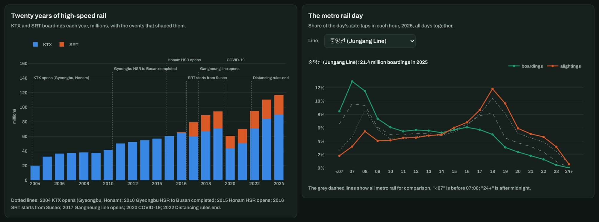
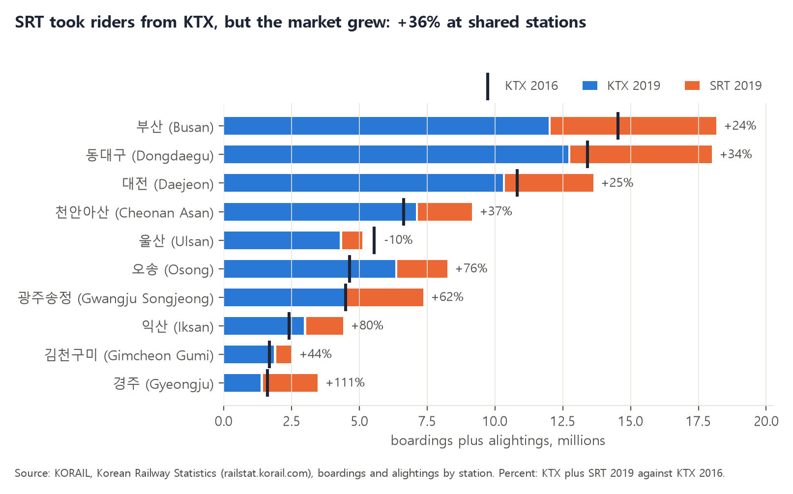
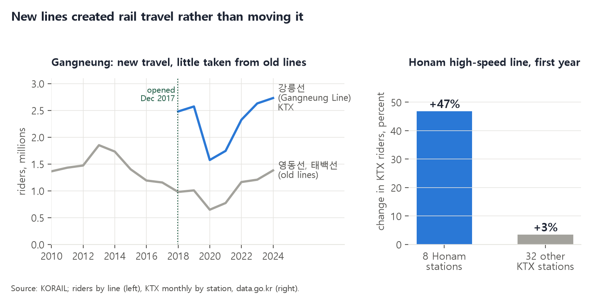
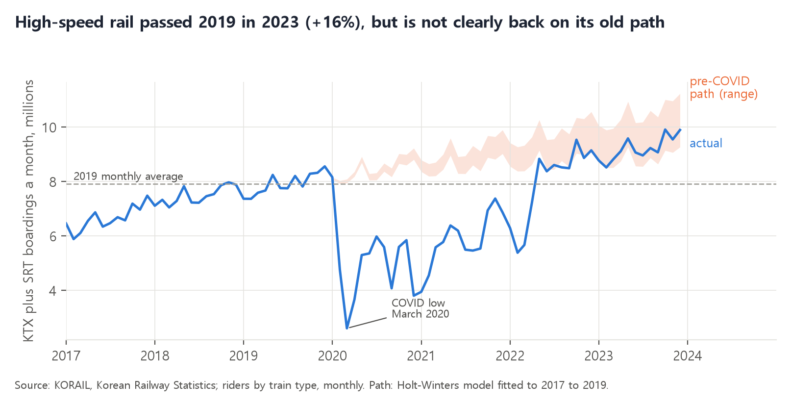
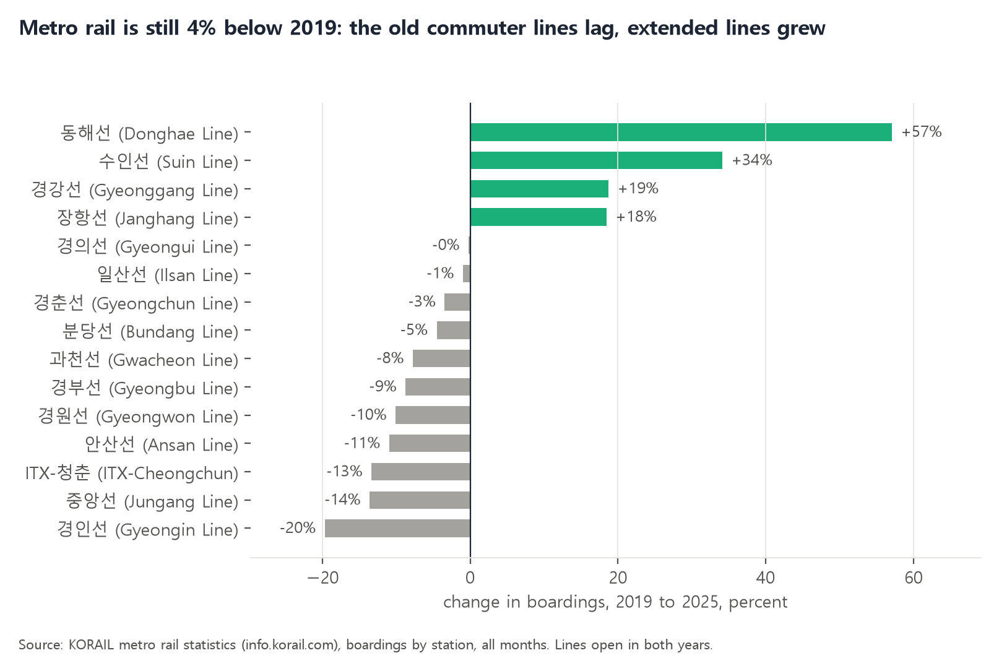
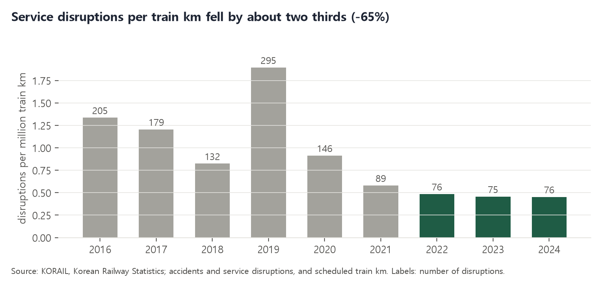

The question
The KTX opened in April 2004 on the Seoul to Busan and Seoul to Mokpo corridors. Since then the network has added the Honam high-speed line (2015), the Gangneung line built for the PyeongChang Winter Olympics (2017) and, in December 2016, a second operator: SR ran the SRT from Suseo in south-east Seoul on the same high-speed tracks, until KORAIL took SR over in September 2026. Then COVID emptied the trains for two years.
Each of these is a question that transport economists and planners ask everywhere. When a rival enters, does it take passengers from the incumbent or bring new ones? When a new line opens, does it create travel or only move riders from slower trains? And after a shock, does demand return to its old path? I wanted to answer them with KORAIL's own open data, and to compare like with like: the same stations before and after, and a comparison group that the change did not touch.
The data
| What | Source | Period |
|---|---|---|
| KTX boardings plus alightings by station, monthly (50 stations) | KORAIL, Public Data Portal (data.go.kr) | Apr 2004 to Dec 2022 |
| KTX and SRT boardings and alightings by station and direction, yearly | Korean Railway Statistics (railstat.korail.com) | 2004 to 2024 |
| Riders by train type, monthly; riders by line and train type, yearly | Korean Railway Statistics | 2016 to 2023; 2004 to 2024 |
| Scheduled train runs and train km | Korean Railway Statistics | 2016 to 2024 |
| Railway accidents and service disruptions, monthly | Korean Railway Statistics | 2016 to 2024 |
| Metro rail (광역철도) boardings by station, monthly, and gate taps by hour | KORAIL metro rail statistics (info.korail.com) | 2019, 2024, 2025 |
Sixteen files in all, cleaned and checked in six notebooks: station totals add up to each table's own subtotals, monthly rows to yearly rows, and KORAIL's yearly totals match its published figures exactly (136.7 million riders in 2023, 144.8 million in 2024). Two numbers are not measurements: the pre-COVID path is a model fitted to 2017 to 2019, and the unit of the train km table (per day) is inferred, because the export does not state it. Station names are given in Hangul with English in brackets.
One page, six notebooks
| Part | What it answers |
|---|---|
| Stations tab | How many KTX and SRT riders use a station, how that changed each year and month, and what share SRT has. All 88 stations, Hangul with English names. |
| Timeline tab | Twenty years of high-speed riders with the events that shaped them, and the month-by-month story of SRT's arrival and COVID. |
| Metro day tab | When metro rail riders travel, line by line, and which lines are most commuter-heavy. |
| Notebooks (Python) | 00 to 02 load and check the sixteen files; 03 explores five candidate findings; 04 makes the charts below; 05 writes the data for the page. |

What the data shows
SRT took riders from KTX, but the market grew
At the stations the two operators share, KTX lost riders after SRT arrived: 부산 (Busan) by 18% between 2016 and 2019, 동대구 (Dongdaegu) by 5%. But the two together carried far more than KTX had alone: 24% more at Busan, 34% more at Dongdaegu, 36% more across all 14 shared stations. KTX stations that SRT does not serve grew by 12% over the same years, so the growth at shared stations was three times the background. Nationally, KTX fell from 64.6 to 59.8 million riders in 2017, SRT's first full year, while high-speed rail as a whole rose from 65.6 to 79.3 million. The data cannot say why, but a likely part of the answer is access: Suseo put a high-speed terminal in south-east Seoul, far from Seoul station and Yongsan. 울산 (Ulsan) is the exception, 10% down.

New lines created rail travel rather than moving it
Before the Gangneung KTX opened in December 2017, rail to Gangneung meant slow Mugunghwa and Saemaul trains on the 영동선 (Yeongdong) and 태백선 (Taebaek) lines. If the KTX had only moved those riders, the old lines would have lost about as many as the new line gained. They lost 0.18 million between 2016 and 2019 (1.19 to 1.01 million), against 2.57 million on the new line: almost all of it was new to rail, whether from roads or new trips. The Honam high-speed line tells the same story. In the twelve months after it opened on 2 April 2015, KTX riders at the eight Honam stations rose by 47%, against 3% at the other 32 KTX stations over the same months.

High-speed rail is above 2019; metro rail is not
COVID cut high-speed riders by more than a third in 2020, and by about two thirds in the worst month. Against the path the market was on before 2020, an estimated 81 to 105 million trips were lost between 2020 and 2022. Riders passed the 2019 level in 2023 (+16%), but whether they are back on the old path depends on how the trend is drawn: a straight trend puts 2024 13% below it, a levelling-off trend 9% above it, so the chart shows a range rather than one line. Metro rail is a different story: 782.8 million boardings in 2025, 3.9% below 2019. The old commuter lines lag (경인선 Gyeongin -20%, 중앙선 Jungang -14%, 경부선 Gyeongbu -9%), and all the growth is on lines extended or linked since 2019 (동해선 Donghae +57%, 수인선 Suin +34%). Long-distance travel has come back faster than the daily commute.


Service disruptions per train km fell by about two thirds
No punctuality figures are published, so the closest open measure of reliability is KORAIL's count of service disruptions (운행장애): events that stop or delay trains without an accident, such as vehicle, signal or power faults. They peaked at 295 in 2019, 169 of them vehicle faults, and have stayed at 75 to 76 a year since 2022, while train km rose. Per million train km the rate fell from 1.90 in 2019 to 0.45 in 2024. The data does not say why, and railway accidents (collisions, derailments, level crossings) show no such fall: between 9 and 28 a year.

Problems in the data, and how they were handled
- Two station series that do not quite meet. The monthly file covers 50 KTX stations to 2022, shows stations under 500 riders a month as 0, and rounds to thousands; the yearly portal table covers every station to 2024. Where they overlap, stations agree within 1%, with two exceptions: Seoul (below) and 행신 (Haengsin) in 2022 (1.4%). The monthly file is used to 2022 and the portal table after it.
- Seoul counted two ways. From 2018 the portal's figure for 서울 (Seoul) is 7% to 10% higher than the monthly file, because it includes Gangneung line KTX riders and the monthly file does not. Both are shown, with a note.
- Renamed stations. 신경주 became 경주 (Gyeongju), 신포항 became 포항 (Pohang), and the airport station changed name twice. Old names are mapped to today's names before any comparison.
- An incomplete year. The portal's 2004 to 2015 station table is incomplete for 2015 (Busan 8.5 against 14.5 million), probably because line codes changed when the Honam line opened. It is used only as a check, for 2004 to 2014.
- Small mismatches between tables. SRT in the monthly table is 1% to 3% higher than in the station table for 2017 to 2019; the 2016 network total differs by 2.1 million between two tables. Each comparison uses one table throughout.
- Undocumented units and labels. The train runs table does not state its unit; it behaves like trains and train km per day. The hourly metro sheets do not say whether "08시" means the hour starting or ending at 8; the start of the hour fits the data. One sheet is titled "1900년 1월" by mistake; months are taken from the sheet tabs.
- Messy exports. Some portal CSVs end without a closing quote, workbooks are laid out for printing, and similar-looking tables are easy to mix up (the first download was the all-trains table, not KTX). Every file is checked against its own subtotals.
Limits
These are before-and-after comparisons with comparison groups, not controlled experiments: other things changed at the same time, such as fares, timetables, roads and the economy, and the data has no origin-to-destination trips, so it cannot show where new riders came from. The pre-COVID path rests on three years of data and is shown as a range for that reason. Station counts are boardings plus alightings, not people. The metro hours mix weekdays and weekends. Revenue, fares and the operators' costs are outside this project, and nothing here has been through peer review.
In September 2026, after the period covered here, KORAIL took over SR and began running KTX and SRT as one service, with KTX fares cut by 10% to match SRT. The data does not yet show the effect of the merger.
Where this could be useful
- Rail operators and regulators: evidence on what a second operator did to the market, station by station, rather than only nationally.
- Transport planners: a simple test of whether a new line creates travel, with a comparison group, for business cases and reviews after opening.
- Analytics and consulting teams: a worked example of turning messy official exports into checked tables, findings with honest ranges, and a page that non-specialists can explore.
The same approach transfers to any network that publishes station counts, such as the Klang Valley rail data in the first project of this series, and to new lines anywhere, by comparing their stations with the rest of the network before and after opening.
About
Lik Ren Tai applies data science in two fields: environmental science and railway systems. This project was built with Python (pandas, openpyxl, statsmodels, matplotlib) and Plotly.
Data: Korea Railroad Corporation (KORAIL), through the Public Data Portal (data.go.kr), the Korean Railway Statistics portal (railstat.korail.com) and KORAIL's metro rail statistics (info.korail.com); SRT figures as published in the Korean Railway Statistics. Fonts: Archivo, Source Serif 4 and Noto Sans KR, SIL Open Font License. This is an independent project, not affiliated with or endorsed by KORAIL, SR or any of the sources.